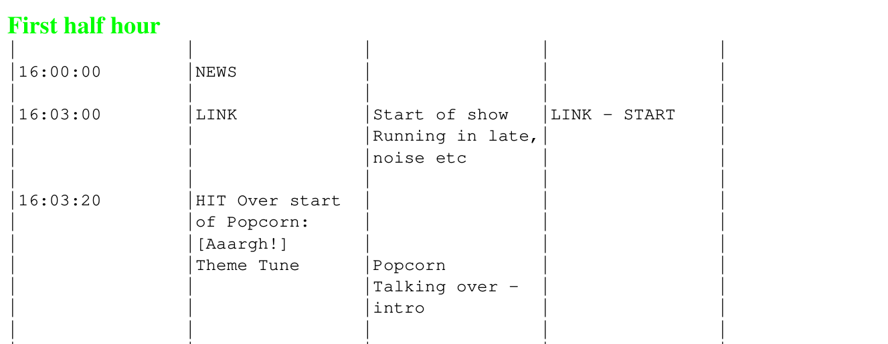
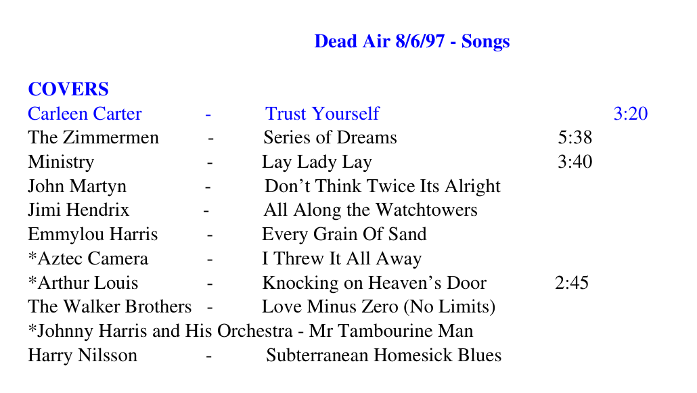

BTSHOW.DOC · 29 November 1996
First show ideas
Names Ben Taylor as presenter and Maxie Haddow-Allen as producer. Considers charity-shop records, punk, psychedelia, live poetry, acoustic sessions, and a theme tune.
Oxford Student Radio · 1995–1997
Running orders, letters, demo tapes on paper, and the things we meant to do. The pencilled-in guest and the person somebody remembers hearing are sometimes two different people.
16:00:00 NEWS
16:03:00 LINK – Start of show
16:03:20
Over start of Popcorn: [Aaargh!]
16:04:30 The Undertones –
Teenage Kicks
16:06:50 Television – Venus
The theme I wanted was the Phantom Surfers’ ‘Popcorn’. My letter to Mark Radcliffe says ‘probably the Phantom Surfers’ version’. At the desk we just wrote ‘Popcorn’.
Hear the Phantom Surfers’ ‘Popcorn’ · See the 1992 LP sleeve
Eoin Quiery had three live session slots. In between them we played everything from Nick Drake to DJ Shadow. Caroline Trettine’s ‘Be A Devil’ had an extra instruction. Play thirty seconds at 45 rpm, fade, then play it again at 33. We never did find a second song that sounded better at the wrong speed.

Paul Harrod wrote after hearing the show. He liked Rufus, thought we should bring Maxie in more, and reckoned I’d said ‘live on Oxygen 107.9FM’ quite enough for one afternoon.
Read the first Sunday running order · Read the studio sheet · Paul on the first Sunday

Each entry opens to show the records, live songs, and music beds in the surviving papers. The standby records and earlier drafts have lists of their own.
Ben Taylor proposed a late-night programme of records, live acoustic music, and poetry, with Maxie Haddow-Allen producing. Local performers could come from the Catweazle Club and the Union Bar. The possible slots were 1–3am on a Monday or Wednesday.
Other notes mention Felicity Kendal, the Troggs, Mr Bungle, Jonathan Richman, the Manics, and Sir Arnold Bax without identifying a track.
The post-demo notes say where Ben would tighten his links, where Maxie would adjust the levels, and where a pause should follow a performance. They also propose slipping from one version of ‘Dancing Queen’ into another at the right beat.
The team wrote its assessment after making the demo.
The cues include unnamed live songs. Post-demo feedback confirms that a demo was made, without itemising all records played.
Several entries name an artist, album, or collection only: Fatima Mansions, Mercury Rev, Blue Nile, Denim, the Manics, Felicity Kendal, and America Strikes Back. Additional jingle ideas repeat the November proposal.
By January the opening had moved to four o’clock. Ben and Rufus had links between records. A poet and a musician each had time to come back for another piece. One jingle gives the show the mock announcement that it was filmed in front of a live studio audience.
Other contemplated snippets name Donovan, Felicity Kendal, Ghostface Killah, the Troggs, Mr Bungle, Jonathan Richman, and the Manics. One line considers a Beatles/Tijuana version without a song title.
Three surviving demo sheets open with news, weather, an ident, and ‘Popcorn’. The early February version starts its records with Aztec Camera. Another opens with the Clash and leaves spaces for new releases.
2 February is the save date of DEMO2.DOC. DEMO3.DOC was saved on 9 February. DEMO4.DOC is a later revision.
Some new-release slots have no track named. DEMO3 and DEMO4 give the same musical selections. Their footer initials differ.
The first running order puts ‘Teenage Kicks’ straight after the theme, then Television’s ‘Venus’ on vinyl. Eoin Quiery has three session slots. For Caroline Trettine’s ‘Be A Devil’, the operator is told to play thirty seconds at 45rpm, fade it, and start again at 33.
A listener reported hearing the entire show on 20 February. Maxie later compared Eoin’s first-week session with Katie’s second-week one. These accounts establish both appearances; individual cues come from the running order.
Eoin Quiery is booked for three sessions without titles. Maxie and a listener confirm the programme, and Maxie confirms Eoin’s appearance.
Katie Buckhaven’s three session entries are ‘Let Her Cry’, ‘It’s A Funny World’, and ‘Silver Dagger’. Between them sit White Town, Love, and Aztec Camera’s version of ‘Jump’. An organ version of ‘King of the Road’ provides the music under the trivia slot.
Maxie wrote the following day about how Katie had sounded and the change in microphone levels since the first week.
Maxie’s next-day email confirms Katie’s appearance. Track titles are supplied by the sheet.
George Kirby, a Catweazle Club regular and an incredible Dylan impersonator, later became a staple of both Oxygen and Oxford TV. He’s on this sheet for ‘To Ramona’, ‘I Cannot Yet Choose To Die’, and ‘I Feel Realer’. Dave Dwan has two readings, and Professor Pea has a literary slot.
In June George asked for a tape of his performance.
Unclassified were Julian Dickinson and Julia Middleton (Jules and Jules), on guitar, voice, and soprano sax. Their session shares the sheet with Catweazle host Andreas Beltzer’s readings. Rufus tests the microphones, and Uncle Anton answers problems.
In April Ben recorded that the duo had played and that Andreas had been on Dead Air the preceding term. The running order supplies the date and planned sequence.
Three slots for Unclassified (Julian Dickinson and Julia Middleton) contain no song titles. Their appearance is independently confirmed in Ben’s April performer handover.
With News Review off the schedule, the station offered us an extra half-hour. The revised sheet runs to 17:58. Superfly were booked to play ‘Short Skirts’, ‘Egg Beater Soul’, and ‘Circle-shaped’. Sam was to read, and the fishing phone-in would follow. The last record before the theme was to be Echo and the Bunnymen’s ‘The Killing Moon’.
In April Ben confirmed that Sam had done the demo and one show in the previous term. The 16 March sheet lists him as Sam.
The band previously called itself Pants. The desk sheet has three session slots. The emails specify the intended songs.
DEAD5.DOC · DEAD5ONE.DOC · OXYGEN mail 6 · OXYGEN mail 8 · OXYGEN mail 12 · OXYGEN mail 37 · OXYGEN mail 47
Eoin’s ‘The Time, The Place’ and ‘My First Cigarette’ sit alongside Jan & Dean, the Undertones, and Jonathan Richman. A second list marks up tracks by Microdisney and Everything but the Girl, and gives the Commodores’ ‘Machine Gun’ as a bed. On 26 April I wrote that an Ian Green session was due that week and that I had three more of his songs on MiniDisc.
One Sunday I played Jimmy Cliff’s ‘Many Rivers to Cross’. Jasper rang and asked, ‘Why are all your songs so miserable?’ Which made me sad.
Sunday 27 April 1997 is the likeliest date. Both April lists give Jimmy Cliff’s record as 2:30, side one, track two. I put an asterisk beside it on the second list and saved the file at 3.55 pm, five minutes before we were due on air.
The two numbering schemes and stars have been retained. Their meaning is not explained in the document.
Ben’s 26 April handover separately says an Ian Green session was due that week and another three songs were on MiniDisc. It supplies no song titles. The April sheets do not establish which records were transmitted.
2DEAD1A.DOC · 2DEAD1B.DOC · 2DEAD2.DOC · 2DEAD2A.DOC · OXYGEN mail 47
The joke in Ben’s pitch was to spend the whole show on Dylan covers and originals without mentioning what they had in common. The dated song sheet gives Eoin Quiery ‘Tangled Up In Blue’ and ‘Simple Twist of Fate’, and George Kirby a ten-minute ‘Sad Eyed Lady of the Lowlands’. The companion script gives Dylan Bedford a poetry slot.
The source is headed ‘Dead Air 8/6/97 – Songs’. The newspaper listing quoted that morning announced Ben and Rufus with music and poetry.
The companion script has a repeated gag requesting something by Womack and Womack; no recording is named.
3DEAD1.DOC · 3DEAD1A.DOC · DYLAN.DOC · OXYGEN mail 48 · JOE mail 48
Ben proposed a farewell show whose running joke was that the programme still had another week to go. The June 15 list brings back Jonathan Richman, adds Robert Wyatt’s ‘Shipbuilding’, and revisits the phone box outside the station. The date comes from the saved file and the sequence in Ben’s May pitch.
The file was saved on 15 June; it contains suggestions for records and features rather than a timed final log.
Our Christmas single was going to have me doing ‘Eternal Flame’ in the style of William Shatner, with Rufus Doors’ orchestral ‘Every Loser Wins’ on the other side. Sadly Rufus chose to leave town before the recording. On the morning of 22 June the station confirmed Dan Lester would operate the desk from 3 to 5 pm.
These were ideas for the Christmas show and its single. Dan Lester was booked to operate the desk from 3 to 5 pm.
DEADAIR1.WRD · DEADAIR2.WRD · OXYGEN mail 48 · JOE mail 24 · JOE mail 26
OXYGEN mail 48 · OXYGEN mail 51 · JOE mail 51 · DEADAIR1.WRD · DEADAIR2.WRD
These ideas cannot be tied to a particular dated broadcast.
DEADAIR1.WRD · DEADAIR2.WRD · @A.002/WRD/DEADAIR2.WRD · @A.003/WRD/DEADAIR2.WRD
The show proposal mentions multiple recordings, including Queen and Bad News.

I used to listen to Out on Blue Six when I’d missed the 21.55 from Manchester to Glossop and had to wait for the 23.20. By the time I wrote to Mark I had my own show in prospect.
‘And, er, it might very well “feature” three songs about vegetables. I might even start with “New Rose” too. So, any chance of an interview? Record a few “idents”? Give us a few tips? (What was that third song about vegetables?)’
I also promised him my treasured collection of charity-shop records, specifically The Happy Hammond Goes Pop Country and John Inman and a Bit of Brass, featuring the Massed Voices of the West Mercia Police Choir and the Webb Ivory Brass Band.
Read the letter to Mark Radcliffe · Joe’s Out on Blue Six playlist on Spotify · Radcliffe on starting Out on Blue Six
I proposed a quarter-hour walk through one part of Oxford, and ‘Nerds’, a weekly guide to the Internet and the World-Wide Web. ‘Inspirations’ invited contributors to choose a poem, memory, or practical idea. In ‘The Hidden Link’, two regular presenters would spin conspiracy theories. Such media prescience!
Ben numbered the discs, picked 197 tracks, and supplied the disc and track references, durations, and ranks for the night presenters. The labels name him at St Anne’s; his instructions say the records belonged to him and his brother. Presenters were to tick what they played and check the track against the CD.
In September I wrote to Mark Radcliffe about the full licence and my hopes for a show with live music, poetry, and my charity-shop records. I asked for an interview, some recorded idents, and the name of the third song about vegetables.
His college CV records November 1995 to June 1997 as ‘program team leader’ at Oxygen and says he worked on the test licence and full-time broadcasting. A separate application describes his role in originating Dead Air and producing and presenting it weekly.
BTSHOW.DOC · 29 November 1996
Names Ben Taylor as presenter and Maxie Haddow-Allen as producer. Considers charity-shop records, punk, psychedelia, live poetry, acoustic sessions, and a theme tune.
BTSHOW2.DOC · 29 November 1996
The November proposal puts the show at 1–3am and imagines regular Aztec Camera records, Pijnacker news, local poets, and songs played at the wrong speed.
BTSHOW3.DOC · 29 November 1996
Possible titles include ‘How to leave the planet’ and ‘Shambling Rank Amateurism’. One feature starts with the phone box outside the station.
DEMO.DOC · 8 December 1996
Theme candidates include the London Symphony Orchestra’s ‘Whole Lotta Love’, a Hammond version of ‘King of the Road’, and ‘Popcorn’.
AFTDEM.DOC · 13 December 1996
The team reviews microphone technique, the links, levels, and how much space to leave after a performance. Ben volunteers to drop ‘a word from our sponsors’.
BTSHOW4.DOC · 13 January 1997
Budgets eight minutes for a poet, twelve for a musician, four for trivia, and four for different versions of one song at the end.
WEBSITE.DOC · 20 January 1997
Draft listing for a ninety-minute show with live sessions, poetry, psychedelia, garage, folk, and charity-shop kitsch. It closes ‘Dead, dead good.’
JINGLES.DOC · 28 January 1997
A Batman-style refrain has variants for a time check, a tea break, the phone-in, and the end of the show. Other lines include ‘Dead Air is filmed in front of a live studio audience’.
STEVE.DOC · 28 January 1997
Four lines of feedback on voice, Rufus, variety in the record introductions, and the short stories.
DEMO2.DOC · 2 February 1997
Aztec Camera, the Clash, and Paul Simon open the record sequence. Readings with a Klaus Wunderlich backing are marked as replacements for session slots.
DEMO3.DOC · 9 February 1997
The Clash open the music; the sheet leaves spaces for five new tunes. ‘Popcorn’ returns after the news.
DEAD1.DOC · 16 February 1997
Ninety minutes with Eoin Quiery sessions, readings, trivia, and a disc played at two speeds. Cue times run from 16:00 to 17:30.
CONTACTS.DOC · 19 February 1997
The production folder contains a working directory of local musicians and poets.
DEAD2.DOC · 23 February 1997
Three songs for Katie Buckhaven, with a phone-booth song by Primitive Radio Gods near the close.
FRASE.DOC · 23 February 1997
Ben and Rufus dialogue, jingles, and instructions for a deliberate five-second silence. The document footer gives 16 February.
DEAD3.DOC · 2 March 1997
George’s live songs share a running order with Dave Dwan, Professor Pea, and records from Lord Tanamo to Jeff Buckley.
DEMO4.DOC · 2 March 1997
A version of the news, records, and readings format with a ‘BT/FS’ footer. The filename and revised save date cannot date any broadcast.
DYLAN.DOC · 2 March 1997
A short note pairs Bowie’s ‘Song For Bob Dylan’ with a Simon & Garfunkel song about Dylan.
DEAD4.DOC · 9 March 1997
A list of session, poetry, feature, and disc entries for the programme, including Julian Dickinson and Julia Middleton as Unclassified.
DEAD4ONE.DOC · 9 March 1997
A timed version of the 9 March show with Rufus on the microphones, three Unclassified slots, Andreas, Professor Pea, and Uncle Anton.
DEAD5.DOC · 16 March 1997
The tracks and features for an extended show include Superfly, Sam, Kenickie on tape, and Ghostface Killah.
DEAD5ONE.DOC · 16 March 1997
The extra half-hour takes the show through to 17:58. The closing stretch includes ‘The Killing Moon’ by Echo and the Bunnymen.
2DEAD1B.DOC · 20 April 1997
A collection of texts in capitals. No aired sequence or performer is established by the file.
2DEAD1A.DOC · 27 April 1997
Eoin’s songs sit with the Cadillacs, the Champs, Jan & Dean, and Gorky’s Zygotic Mynci. Some entries carry disc and track numbers; there is no complete on-air sequence.
2DEAD2.DOC · 27 April 1997
The list marks individual selections and names ‘Machine Gun’ by the Commodores as a music bed.
2DEAD2A.DOC · 27 April 1997
Surreal compliments, other reading material, and a link about playing back a message.
KAMASUT.DOC · 27 April 1997
A text attributed within the file to a published translation. The file alone does not establish that a reading was broadcast.
3DEAD1.DOC · 8 June 1997
Notes for the penultimate show bring together Eoin Quiery, George Kirby, and Dylan Bedford. The script also casts the Boo Boys and stages an interview.
3DEAD1A.DOC · 8 June 1997
Commercial recordings and live options appear separately. The latter include two Eoin songs and a ten-minute slot for George’s ‘Sad Eyed Lady of the Lowlands’.
3DEAD2.DOC · 15 June 1997
A 15 June file lists Jonathan Richman, Robert Wyatt, the Smiths, and the phone box outside the station.
The 38 timed entries run from the four o’clock news to the 5.30 ident. These are desk cues. The sheet gives 17:26:30 twice.
| Time | Cue | Studio sheet |
|---|---|---|
| 16:00:00 | News | Station news |
| 16:03:00 | Link | Start of showCue the sound of the team running in late. |
| 16:03:20 | Theme | PopcornShout over the start, then talk over the theme. |
| 16:04:30 | Record | The Undertones – Teenage KicksCD, track 5. Straight in; fade from 2:19. |
| 16:06:50 | Record | Television – VenusWhisper over the outgoing fade. Vinyl at 45rpm, side A, track 1; ends at 3:43. Follow with the ‘Yikes!’ hit. |
| 16:10:40 | Trail | Station trail |
| 16:11:30 | Link | Introducing Dead Air, Maxie, and RufusIdentify the records, preview the programme, and introduce Rufus as the work-experience member of the team. |
| 16:13:15 | Record | Nick Drake – One of These Things FirstKeep the mics up at the start. Bryter Layter, track 4; piano at 0:13. |
| 16:18:00 | Station break | Advertisements and ident |
| 16:20:00 | Link | Rufus’s choice‘Yo!’ hit, identify the records, then the scripted link. |
| 16:21:30 | Record | DJ Shadow – Organ Donor1:57; follow with the ‘Wait just a minute’ hit. |
| 16:23:30 | Session | Eoin QuieryTalk to the musicians. Introduce Eoin’s choice. |
| 16:29 | Record | Stina Nordenstam – Little StarRomeo + Juliet soundtrack; straight in, 3:36. The disc track number is left as question marks. |
| 16:32:30 | Record | The Fall – Totally WiredStation ident and whisper. The Collection, track 13; three seconds of drums. |
| 16:36 | Reading | Fraser readsKlaus Wunderlich’s Happy Hammond underneath. The script calls for the decks to go off in the middle of the reading. |
| 16:38 | Record | Tiger – On The RoseKeep the mics up. CD, track 1; five seconds of intro, guitars at 0:13. |
| 16:40:40 | Station break | Advertisements, ident, and linkIdentify the records; scripted link on interview advice. |
| 16:42 | Session | Eoin QuierySecond session slot. |
| 16:46:30 | Feature | Caroline Trettine – Be A DevilAfter the link, play side one, track one at 45rpm, fade after thirty seconds, then replay at 33rpm. Watch for the false ending. |
| 16:51 | Ident | Promotional ident |
| 16:52 | Record | Monaco – What Do You Want From Me?Three short hits and a link into the record. Five seconds of bass at the start; start talking over the fade at 3:42. |
| 16:56:30 | Feature | Maxie’s trivia slotIntroduce the New Order connection. Meco’s Star Wars Theme/Cantina Band underneath, on vinyl at 45rpm. |
| 16:58 | Station break | Advertisements and news intro |
| 17:00:00 | News | Station news |
| 17:03:00 | Theme | PopcornBatman hit, talk over the theme, and introduce the last half-hour. |
| 17:03:40 | Record | Aztec Camera – Good Morning BritainStray, track 5; guitar and drums, ends at 3:58. |
| 17:07:40 | Reading | Fraser readsPretend not to notice the previous record has ended. Joy Division’s Love Will Tear Us Apart is the bed, from Permanent, track 1. |
| 17:10 | Trail | Promotional trail |
| 17:11 | Session | Eoin QuieryA shout into Eoin’s third session slot. |
| 17:14:30 | Phone-in | Phone-in |
| 17:18 | Station break | Link, advertisements, and identIdentify the records; scripted ‘Simple Simon’ link. |
| 17:20 | Record | Urusei Yatsura – Strategic HamletsTrack 1; eight seconds of guitar. No fade. Play the hit at the end. |
| 17:22:39 | Record | Jonathan Richman – I Was Dancing In The Lesbian BarI, Jonathan, track 5. Straight in; ends at 3:39. |
| 17:26:30 | Link | FA Cup betWhisper hit, identify the tracks, then the FA Cup link. |
| 17:26:30 | Mix | Dancing QueenThe desk sheet gives this mix the same start time as the preceding link. |
| 17:28:50 | Theme | PopcornTalk over the closing theme. |
| 17:29:50 | Link | End of show‘We’re not live now are we?’ |
| 17:30 | Ident | Station ident and out |
Programme notes as data · Document catalogue · Full station programme grid